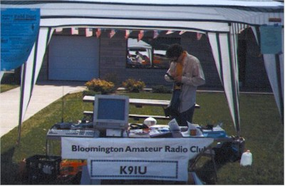
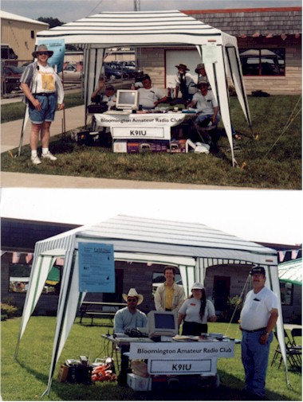
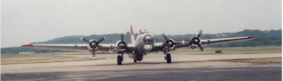
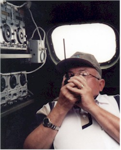

The BARC/K9IU tent from Air Fare '99, courtesy of Rob Hamros:

The BARC/K9IU tent from Air Fare '99, courtesy of Russ Ryle:

A B17 Russ worked from and a picture of Russ working his radio magic, from somewhere over south western Ohio during Field Day '99:

Copyright © 2000-2002 Bloomington Amateur Radio Club. All rights reserved.